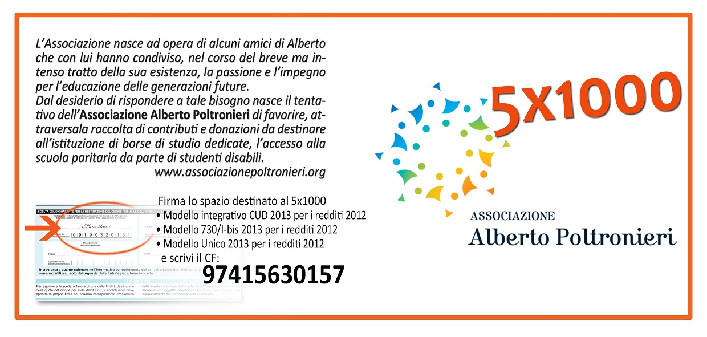
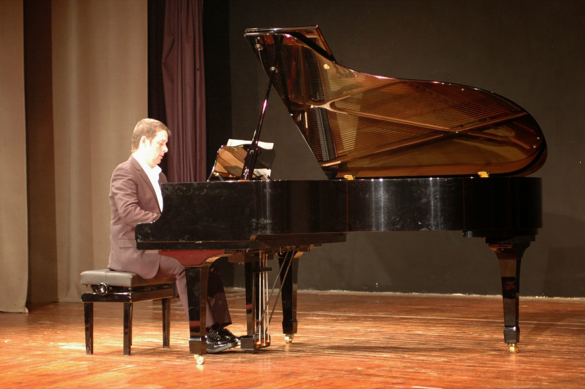

...perciò il grande problema della società è innanzitutto educare i giovani. Il tema principale, per noi, in tutti i nostri discorsi, è l’educazione: come educarci, in che cosa consiste e come si svolge l’educazione, un’educazione che sia vera, cioè corrispondente all’umano, all'originale che è in noi, e che si flette in ognuno in modo diverso...
L'Associazione
L'Associazione Alberto Poltronieri nasce ad opera di alcuni amici di
Alberto che con lui hanno condiviso, nel corso del breve ma intenso
tratto della sua esistenza, la passione e l'impegno per l'educazione
delle generazioni future.

Nota sui contributi
L'iscrizione dell'Associazione Alberto Poltronieri al Registro delle
associazioni di volontariato comporta un notevole vantaggio per coloro
che erogheranno contributi in favore dell'Associazione stessa: la legge
n. 80 del 25 maggio 2005 (conversione del cosiddetto "decreto sulla
competitività") prevede che le erogazioni liberali, effettuate sia da
persone fisiche sia da aziende, siano deducibili fino ad un massimo del
10% del reddito complessivo dichiarato e sempre che il contributo non
superi la soglia di Euro 70 mila annui.
{kind=link}

News
Contributo straordinario per gli alunni disabili frequentanti le scuole paritarie.